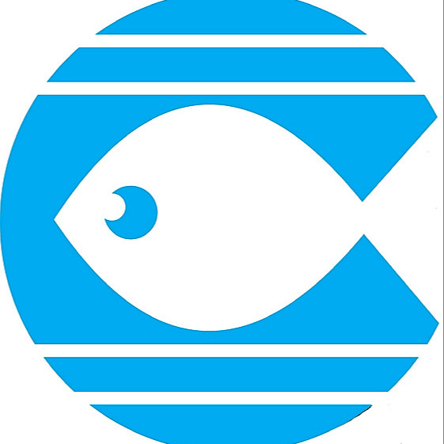

@lavozdejesus
Ministerio de Evangelización Católico dirigido por Mons. Roberto Sipols
Sitio de Internet
Canal de Youtube
Devocionales Diarios
Apoya nuestro ministerio
Enlaces
Vea el último video publicado
Encuentro Al Pie De La Cruz: 8 Octubre 2022 10 am (Venezuela)
En Vivo en Familia
EN VIVO: "Milagros Eucarísticos" - "¿Qué nos quiere decir Dios con ellos?" (1ra sesión - 10 de Octubre 2022 8pm VE)
EN VIVO: "Milagros Eucarísticos" - "¿Qué nos quiere decir Dios con ellos?" (2da sesión - 11 de Octubre 2022 8pm VE)
Nuestras Redes Sociales
Instagram
Facebook
Twitter
Telegram